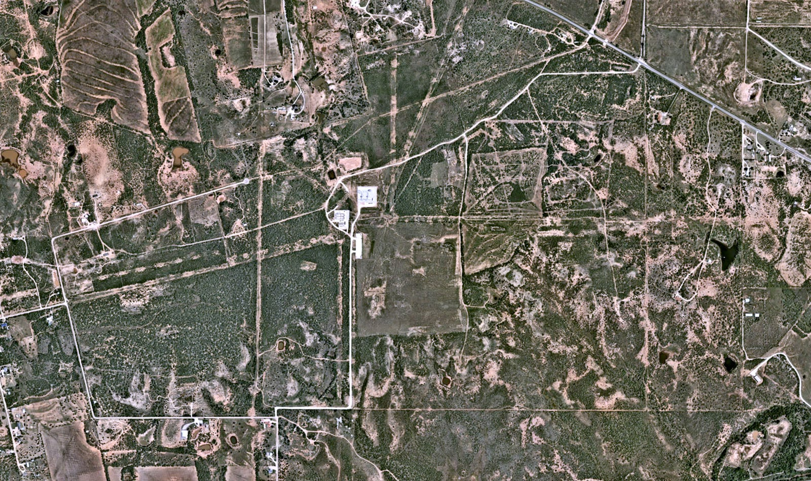
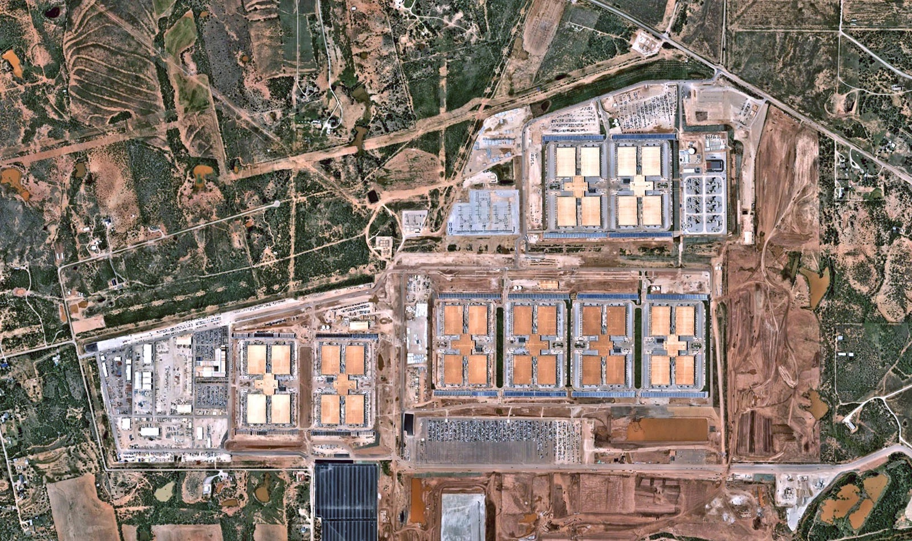

How Data Centers are Reshaping Our Land
Data centers require an immense amount of power to operate, from increased electricity usage to heavy water consumption. According to Alejandra Martinez and María Méndez in “Hundreds of Data Centers Are Coming to Texas. Here’s What You Need to Know.” water is used to cool the servers since they generate so much heat. Although new technology is being developed to use less water, it is predicted that by 2040 data centers could account between 3%-9% of the state's total usage.
Before and After Development


Projected Data Center Water Usage by 2040
| Data Center Capacity Scenario | Renewable Heavy | Balanced | Thermal Heavy |
|---|---|---|---|
| Low growth (Billion gal) | 190 | 275 | 320 |
| Low growth (% share of TX water) | 3.03% | 3.97% | 4.99% |
| Medium growth (Billion gal) | 270 | 390 | 450 |
| Medium growth (% share of TX water) | 4.3% | 5.62% | 7.07% |
| High growth (Billion gal) | 345 | 505 | 585 |
| High growth (% share of TX water) | 5.56% | 7.27% | 9.15% |
Source from researchers at The University of Texas at Austin, UT Jackson School of Sciences.
Fuel in this chart is categorized by renewable energy sources, such as wind & solar; thermal such as natural gas and coal; and balanced which is a mix of the two.
How Texas Voters Feel About Data Centers
D5-D6 · System and Documentation
Extend Module 1 patterns, then link your sources, asset credits/licenses, test record, transformation notes, and AI disclosure.